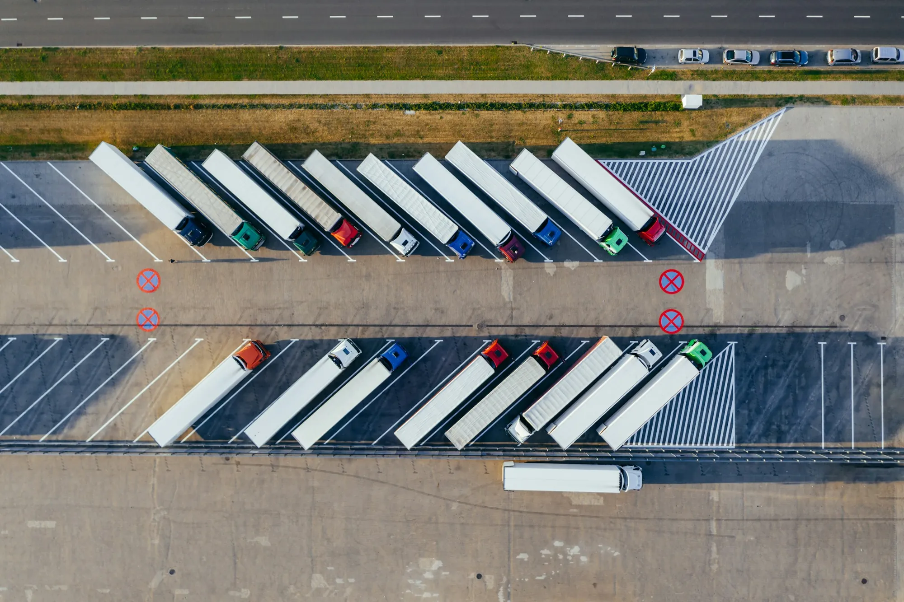

Un camion solo per la tua merce.
Carico dedicato
Carichiamo da te e scarichiamo dal destinatario. In mezzo non ci sono depositi, trasbordi o altre consegne.
Trasporto merci su strada
Da San Ferlino spostiamo la merce delle aziende: camion dedicati, pallet in groupage, magazzino in conto terzi. Per una spedizione sola o per quelle di tutti i lunedì.
I servizi
La merce cambia, e cambia il modo giusto di farla viaggiare. Qui trovi cosa comprende ognuno dei tre servizi.
Metti a confronto i serviziUn camion solo per la tua merce.
Carichiamo da te e scarichiamo dal destinatario. In mezzo non ci sono depositi, trasbordi o altre consegne.
Paghi solo lo spazio che occupi.
Un pallet, cinque pallet o qualche scatola imballata: la tariffa si calcola sullo spazio usato.
Il magazzino lo teniamo noi.
Ci mandi la merce, noi la riceviamo, la sistemiamo a scaffale e la spediamo quando arriva un ordine.
Come lavoriamo
Una spedizione fila liscia quando i dettagli sono chiari prima della partenza. Li chiariamo con te, uno per volta.

Che merce è, quanta, da dove a dove. Oppure cosa va fatto in magazzino.
Mezzo, orari, accesso al carico. Se manca qualcosa ti chiamiamo.
Prezzo, tempi e condizioni scritti, prima di prenotare il viaggio.
Spedizioni ricorrenti
Se le partenze si ripetono, conviene fissarle: giorni di ritiro sempre uguali, prezzi decisi una volta, una persona sola che segue trasporto e magazzino.
Sì. Con pallet e colli la merce viaggia in groupage con altre spedizioni e paghi lo spazio che occupa, anche se è un pallet solo.
Sì. Scrivi partenza, arrivo, merce e date. Ti rispondiamo con mezzo, tempi e prezzo del viaggio.
Sì. Con la logistica in conto terzi la riceviamo, la teniamo a scaffale, prepariamo gli ordini e li spediamo.
Sì. Inserisci quello che sai e lascia vuoto il resto. Completiamo i dati insieme prima della proposta.
Richiesta di preventivo
Descrivi la tua spedizione in tre passi, con le sole domande che servono per il servizio scelto.
Richiedi un preventivoCarico dedicato · Pallet e colli · Logistica e magazzino